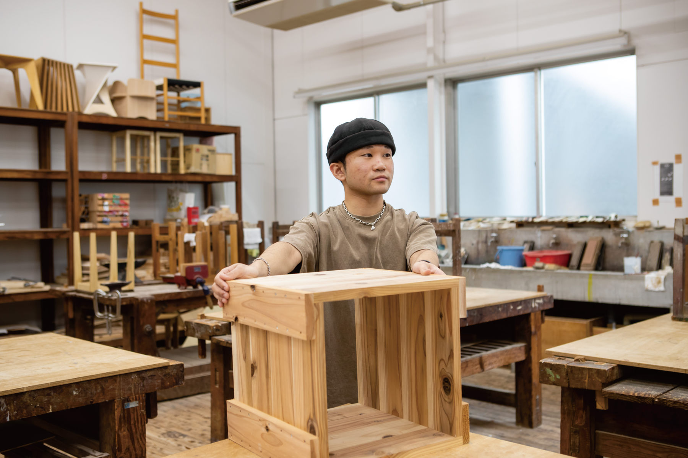

空間演出デザイン学科 片山 樹 ― 気になる作品を押してみてください
WORKS作品一覧
ABOUT最後に

片山 樹空間演出デザイン学科
最後までご覧いただき、ありがとうございました。
私は大学生活を通して「全進全力」を大切にし、所属するすべてのプロジェクトに対して、自ら考え、手を動かし、最後までやり切る姿勢で取り組んできました。
特に力を入れてきたのはチームで進めるプロジェクトです。制作においては、チーム全体を俯瞰しながら課題を整理し、必要に応じて軌道修正を行う役割を担ってきました。自ら率先して行動することで、チームの雰囲気や制作の流れを前向きなものに変えることができたと感じています。こうした姿勢や行動が評価され、学科代表にも選出していただきました。
今後はこれまで培ってきた、現場で考え動き続ける力を活かし、チームの一員として空間や体験づくりに貢献していきたいと考えています。
- 誕2004年
福岡県篠栗町にて誕生 - 中美術部にて活動
芸術に興味をもつ - 高専門的に学ぶため
九州高校 造形芸術科に進学 - 大空間に魅了され
空間演出デザイン専攻に入る - 今多くのプロジェクトに参加し
学科代表に選出される